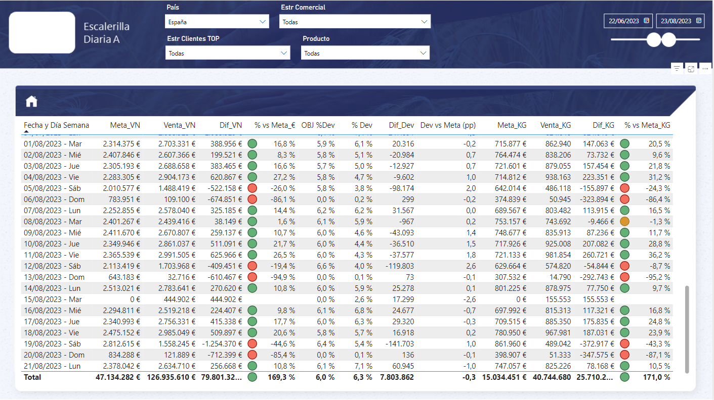
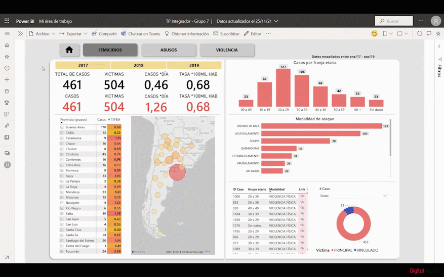
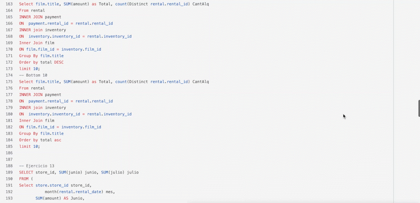
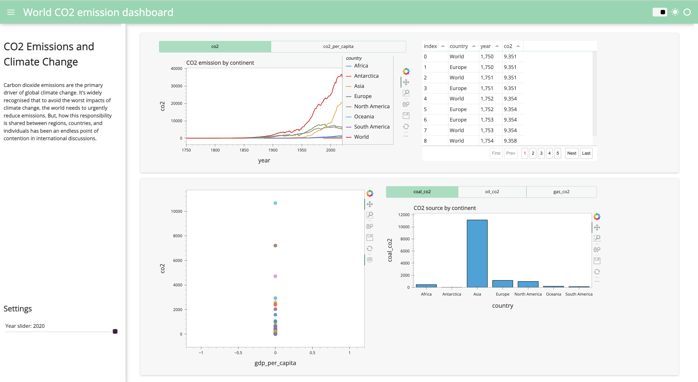
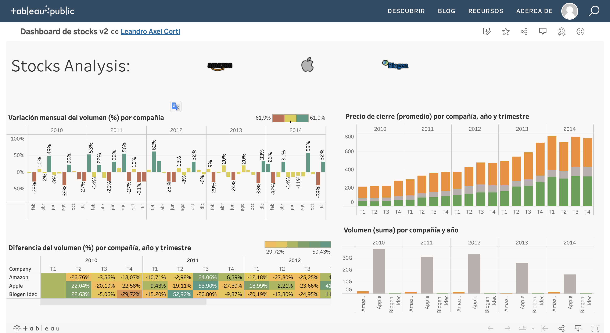

Building a Dynamic Data Analytical Environment with Kettle, MySQL, and Power BI: A Case Study of Empowering Commercial Analysis and Decision-Making, featuring Data Management, Data Pipelines, ETL, Database Administration, and Business Intelligence.
Empowering CEOs with a Business Analytics Solution: building a Dynamic Analytical Environment with Power BI
using Data Management, Architecture, Modeling, and Business Intelligence Techniques.


RFM (Recency, Frequency, Monetary) Analysis is a customer segmentation technique that is mostly used to segment users based on their last purchase, how often they purchased and how much they spend. It's used to improve targenting, reduce cost, and increase the return on advertising investment.

The goal of this team’s final project is to provide support to the Gender Violence Institute, with the analysis of the data collected from different programs and the implementation of a management tool. This dashboard has different KPIs that will allow for greater efficiency in the management of public investment in policies against gender violence.

EDA is the practice of investigating a dataset and summarizing its main features. It’s a way of questioning the data in other to derive facts that could aid decision making in a business or venture.

For this project, I worked with Jupiter Lab and import the packages Pandas, Numpy and Panel. The main challenge was to build an interactive dashboard with a good visualization of Carbon dioxide emissions, the primary driver of global climate change

In this dashboard I analysed the stocks of Apple, Amazon and Biogen from 2010 to 2014.